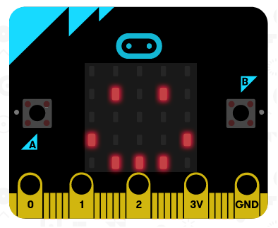
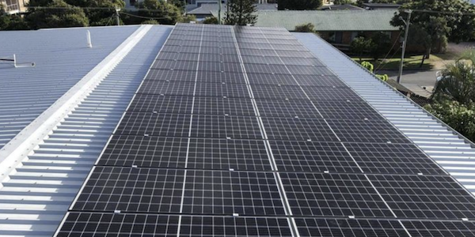

Micro:bit— capturing temp and light and saving to PC using Python

Nov 3, 2020
Software Development
The Micro:bit is a mini-computer mainly used for education. I wrote about my
process developing a simple python app that uses the light sensor on the device to make light
recordings, logging those recordings as a CSV on a connected PC.
→ Read the full article (3 minute read)
Solar in Australia: A better investment than shares?

Aug 25, 2020
Investing
Solar
A run through of the investment returns of a 10kW solar system in Queensland.
Note that since this artcile was written, solar feed in tarrifs have reduced significantly.
→
Read the full article(3 minute read)
Valuing SaaS companies — Xero case study
Oct 9, 2018
Investing
Xero is a popular accounting Software as a Service company. I wrote about some
methods for valuing Software companies which may have high initial Customer Acquisiton Costs, but
generate high-margin long-term returns.
→Read
the full article (3 minute read)
How to get weekly emails summarising brand mentions on Google News & Twitter
Mar 21, 2018
Automation
A few simple ways for marketing teams to get notified of their company mentions
on Google & Twitter.
→
Read the full article (2 minute read)
Get stock price alert emails with Google Sheets, Gmail & Zapier

Dec 31, 2017
Investing
Automation
How to use some free web-based tools to set up a stock price notification system.
→
Read the full article (5 minute read)